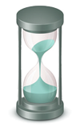

I got your 6 - "Я захищаю твій тил"
Наша мета:
- Запобігти самогубству
- Підтримати тих, кому скрутно
- Привернути увагу тих, хто поруч
- Тема самогубства була та лишається такою, про яку говорити якось не прийнято. Адже в розмовах комфортніше не згадувати подібне, аби не торкнутись чогось брудного.
- Згідно інформації МОЗ України, наша країна знаходиться серед 25 країн світу з найвищим рівнем суїциду.
- Чому ж люди, варті уваги, поваги та підтримки, замислюються про суїцид?
- Ми будемо про це говорити. Без табу.
Абревіатура ;igy6 (I got your 6) прийшла до нас з американської військової культури та перекладається як "Я тримаю твої 6 годин", що мовою військових значить "Я прикриваю твій тил". Крапка з комою на початку символізує самогубство, якому вдалося запобігти. Як продовження життя після наміру його припинити.
- Мати за спиною тил, надійність, безпеку - потреба, яку мають більшість з нас.
- Відсутність віри, надії, сподівання на порятунок, нескінчений та нестримний біль. Нерозуміння навколо. Самотність. Втрата сенсу існування. Це те, що може штовхнути до останньої межі.
- Допомога, підтримка та розуміння. Про які так важко просити. Це те, чого так бракує.
Люди роблять вибір, який вважають вірним. Та не завжди бачать інші шляхи. Ми не робимо вибір замість вас. Але доводимо, що інші шляхи існують.
Деякі міфи та їх спростування
- Людина говорить про суїцид, тому що хоче привернути до себе увагу. Маніпулює ...?
- - В переважній більшості це не так. Людині погано. Вона повідомляє про свій біль. Сподівається на підтримку. Хоче зупинитись.
- Розмови про суїцид можуть спровокувати його спробу ...?
- - Розмови про суїцид, як і про будь що, не є спрямуванням до конкретних дій.
- Суїцид трапляється без попередження ...?
- - Більшість людей повідомляють про свої наміри. Вербально або невербально. Явно або неявно. Суїцид, за виключенням деяких випадків, не є раптовим, легковажним, ексцентричним вибриком.
- Схильність до суїциду - успадкована психічна хвороба ...?
- - Переважно суїцидальні наміри є наслідком проблем фізичного або психологічного характеру.
- Ті, хто підходять до суїциду, прагнуть померти ...?
- - В багатьох випадках, люди прагнуть не вмерти, а лише зупинити нестерпний біль за будь-яку ціну. Швидко. Вирішити проблеми, яким не бачать іншого вирішення. Нема людини – нема проблем.
- Спроба самогубства не повториться ...?
- - До самогубства людей підштовхують певні проблеми. Якщо після невдалої спроби суїциду проблема не була вирішена – спроба самогубства може повторитись. Багато людей доводили справу до кінця. Неодноразовість спроб не свідчить про несерйозність або маніпулятивність намірів. Це свідчить про нерозв’язану проблему. Підтримка ззовні, відчуття точки опори, пошуки нових шляхів, звернення до спеціалістів можуть змінити все.
- Суїцид - нерозважливий, несміливий та легковажний крок ...?
- - Більшість замислюються про свої плани. Виношують їх. Та повідомляють тим, хто навколо. Останній крок є надзвичайно важким. Він потребує переступити через себе, зламати себе.
- «Ти не дбаєш про своїх близьких, про дітей!»
- - В критичному стані, на межі, коли навіть власне життя вже не має цінності, людині бракує ресурсу щоб дбати про будь-кого іншого. В цей час людина знаходиться в тунельному стані свідомості. Бачить лише те, що попереду (суїцид) та не бачить інших можливостей.
- Суїцид неможливо спинити ...?
- - Знання про те, до кого можна звернутись, особливо зараз і тепер - спиняє самогубство.
- Допомогти може лише професіонал ...?
- - Якщо у критичну мить поруч опинився спеціаліст – вважайте, пощастило. Але допомогти може не лише професіонал. Допоможе той, хто може та хоче слухати. Розуміти. Мовчати. Говорити. Головне – не лишатись на самоті.
Ознаки суїцидальних намірів
Люди, які планують самогубство, можуть зовнішньо не відрізнятись від інших. Можуть бути цілком оптимістичними на вигляд та не подавати жодних зовнішніх тривожних ознак. Це часто вводить в оману. Розмови таких людей про суїцид оточення може сприймати як жарт або нісенітниці. Проте існують ознаки, які мусять замислитись тих, кому небайдуже.
- Розмови про суїцидальні наміри або про бажання померти.
- Відчуття безнадії – що нічого в житті ніколи не стане краще.
- Відчуття того, що ніхто не може допомогти.
- Відчуття людини, що вона є тягарем для інших людей.
- Зловживання алкоголем або іншими речовинами, що викривляють свідомість.
- Наведення ладу у справах – у фінансах, роздавання особистих речей, підготовка до смерті.
- Складання передсмертної записки.
- Прагнення наражати себе на небезпеку, брати участь у подіях, внаслідок яких можна загинути.
- Важливо зазначити: Якщо людина лікує депресію, треба бути пильним, особливо близьким. Тому що суїцид найчастіше скоюється не на глибині депресії, а під час виходу з неї. Коли депресія важка, то немає ні сил, ні бажання щось взагалі робити. На виході з депресії (в середньому 2-3 тижні від початку лікування) бажання жити ще немає, а сили вже з'являються.
Що робити, коли ви дізнались, що хтось планує спробу суїциду?
- Ні в якому разі не сприймайте це як жарт, маніпулювання або спробу привернути до себе увагу. Дуже часто люди повідомляють про це з останньою надією на порятунок.
- Ні в якому разі не лишайте людину наодинці. Приїдьте до неї, покличте родичів, друзів, сусідів. В крайньому випадку – поліцію або швидку медичну допомогу. Залишайтесь на зв’язку, говоріть або слухайте. Порадьте зателефонувати на гарячу лінію 7333 – людині у критичному стані краще за все спілкуватись зі спеціалістом. Але навіть за його відсутності, підтримати може будь-яка небайдужа людина.
- Скажіть прямим текстом – «Мені важливо, щоб ти жив!». Саме такі слова дають надію. Саме ці слова вселяють віру, що ти потрібний на цій землі. Переконайтесь, що людина не має доступу до медикаментів, зброї та других речей, які можуть бути застосовані самогубцею.

«Важливо, щоб ти жив!»
- «Соберись, тряпка!»
- «Ти мусиш встати та йти!»
- «Ти подумав про про своїх дітей (батьків, дружину)?»
- - Такі слова не надихають. Не мотивують. Відштовхують. Людина, яка наважилась на самогубство, не має ресурсів. Ані для себе, ані для інших. Сподіваюсь, після прочитання цих матеріалів, таких слів лунатиме менше.
- «Мені важливо, щоб ти жив!»
- - Це саме ті слова, які необхідні. Які зігрівають душу та дають надію. Надію на майбутнє, якого не відчути. Надію на те, що ти комусь потрібний. Надію, якої нема. Усвідомлення, що є хтось, кому ти небайдужий. Це слова, які можуть зупинити в критичну мить. Які можуть дати віру в себе, сили та натхнення іти далі.
Просити про допомогу – не соромно!
Якщо ви замислювались про самогубство хоч один раз – це дуже тривожна ознака! Якщо бездіяти, не звертати на це уваги, існує ймовірність - це спаде на думку знов.
Якщо ви вже мали спробу суїциду та переконані, що вона не повториться – слід негайно вжити заходів. Бажання суїциду може повернутись навіть попри переконання, що усе позаду.
- - Завчасно домовтесь з декількома друзями або людьми, яким довіряєте та які мають змогу бути з Вами на зв’язку у будь-який час.
- - Спитайте в них прямо – «Я можу телефонувати тобі о 3-й ночі, якщо мені буде важко та погано?»
- - Дайте їм почитати цей матеріал.
- - у критичний момент телефонуйте на гарячу лінію 7333. Там чекають на ваш дзвінок цілодобово. Можна телефонувати другий, третій раз, скільки завгодно, доки є потреба. З вами говоритимуть ті, хто хочуть допомогти. Яким важливо, щоб Ви жили.
Ситуативні та перспективні рішення
Уявімо собі альпініста, який впав зі скелі та зачепився льодорубом. Падіння зупинено. Він живий. Але висить на краю скелі, ризикуючи будь-якої миті зірватись знов. Йому лишається шукати шлях, як поступово спуститись вниз, сподіваючись також на допомогу рятувальників.
Це нагадує те, що відбувається після спроби суїциду, коли людина лишається живою. Критична мить позаду. Живеш, але на краю скелі, з якої нещодавно зірвався. Так, людина жива. Але лишається в тих самих умовах, з тими самими обставинами, що штовхнули на такий відчайдушний крок. Як бути? Де шлях від краю? Він існує. Хоч і не дуже помітний. І в його існування важко повірити. Про це – читаємо нижче.
Єдина база ініціатив для ветеранівДедлайни (Відтермінування)
Коли я служив строкову службу у свої 19 років, було важко. На службу нас призивали проти власної волі, тому ця служба сприймалась, як тюремний термін. Ми рахували дні до «дємбєля» та закреслювали дні в календариках. Але ми знали точно – «дємбєль» настане і ми поїдемо додому. Точно знали коли.
В стані депресії попереду не видно нічого. «Дємбель» не передбачається. Невідомо, коли закінчиться цей нестерпний час. Може здаватись, що ніколи. Невідомо, як з цим впоратись.
 Але. Значно легше стає, якщо поставити собі умовний термін, скажімо, місяць. Або два. Які треба протриматись. Адже перечекати несприятливий період легше, ніж терпіти усе життя? А потім щось точно повинно змінитись. Невідомо що. Невідомо як. Але щось зміниться. Трапиться якесь диво. З такою вірою стає значно легше. Навіть без жодних підстав. А іноді деякі дива дійсно трапляються.
Спробуємо уявити людину посеред океану. Корабель пішов на дно і ти лишився один. Берегів не видно. Навколо – лише океан. Та уламок дерева, за який ти вчепився. Хоч ти живий та наразі не потонув, надії на порятунок нема. Адже у відкритому океані люди довго не живуть. Існує вибір – відпустити рятівну деревину та піти на дно. Або, міцно вчепившись за дерево, чекати дива. Раптом неподалік пропливатиме корабель? Або океанська течія наблизить до берега? А може люди почули сигнал SOS та вже мчать на допомогу?
Звернення до психіатра
- Визнати себе психом?
- - Ні. Ніколи.
- Визнати себе хворим?
- - Ні. Це не про мене. Який же я хворий? Не кашляю, соплі не течуть. Душа болить, але - то таке, минеться.
Хвороби бувають різними. Можна почуватись фізично здоровим, але в житті усе шкереберть. Таке захворювання, як, наприклад, депресія, може бути смертельно небезпечним. Якщо хоч раз вам або вашим знайомим надходила думка про самогубство – час іти до лікаря.
Звернувшись до психіатра, можна отримати курс медикаментозного лікування. Антидепресанти або заспокійливі або снодійні засоби. Може виникнути питання: навколо ж нічого не змінюється. Що дадуть ліки, якщо я лишаюсь у тих самих умовах, що штовхають мене до найгірших думок?
Та іноді медикаментозне лікування дає можливість побачити ті самі речі іншими очима. Під іншим кутом. І вони перестають бути страшними та нестерпними. Перевірено.
До речі, рушниками до койки не прив’язують. На облік не ставлять. Примусово в діспансер не кладуть.
Окрім іншого, звернутись можна також до приватного психіатра. Лікарів зручно шукати тут:
Звернення до психотерапевта
«Я ходив у тренажерний зал. Три рази. Не допомогло. Не накачався. Ходити в тренажерний зал – марнотратство». Правильна думка? Ні, неправильна. Психотерапевт допомагає. Не швидко. Не без власного бажання. Не кожен психотерапевт підійде саме Вам.
- Слід розуміти:
- - Психотерапевт не виписує ліки (на відміну від психіатра).
- - Не ставить діагнозів.
- - Не дає оцінок.
- - Не засуджує.
- - Не дає порад.
- - Не питає «На що жалієтесь?»
- - Не питає "Хочете про це поговорити?"
Послуги психотерапевта небезкоштовні, це так. Висококваліфікована робота не може бути безкоштовною. Але існують також соціальні ініціативи, де працюють спеціалісти високого рівня.
Послугами психотерапевта часто користуються разом з послугами психіатра.
Алкоголь не рятує
Іноді здається, що алкоголь заглушить біль. А як ні – можна збільшити дозу. Насправді так. Шалені дози спиртного, від яких просто вирубаєшся, дійсно заглушають біль. Тоді алкоголь дійсно допомагає. Наступного дня також – у стані токсикозу, жахливий фізичний стан глушить психологічний біль. Але. Алкоголь надзвичайно контрастує відчуття та емоції. Біле стає заспліплюючим білим, а чорне – морочно чорним. Кожна муха перетворюється на слона. Біль, який хочеться заглушити, стає ще нестерпнішим. Стан викривленої свідомості. Викривленої реальності. В такому стані людина стає здатною на вчинки, яких би не робила тверезою.
Наша команда
-
Мені важливо, щоб ти жив!Віталій КоломієцьАвтор проектуВолонтер, web-розробник
Тим, хто замислювався про самогубство, або намагався зробити спробу, буває надто важко знайти свій шлях. Знайти розуміння. Я знаю. Але вихід існує. Він поруч. Дуже непомітний. Але я точно знаю - він є. Варто його шукати. Варто жити.
Проект igy6 створений на підставі власного досвіду та з допомогою багатьох небайдужих людей. Своєю метою бачу порятунок життя. Людина варта того, щоб жити. Навіть, коли в це не віриться.
Самогубство можно спинити.
I got your six!
-
Мені важливо, щоб ти жив!Вікторія СеменцулКонсультант проектуПсихотерапевт, суїцидологСуїцид - дуже болюча та табуйована тема. Людина дуже неохоче говорить про це. Мабуть тому, що наше суспільство досі засуджує будь-яку людину, що вчинила таку спробу, не намагаючись навіть зрозуміти, чому людина це зробила. Тому будь-які суїцидальні думки людина звикла нікому не озвучувати, самотужки боротися зі складнощами життя. Але поступово з'являються такі чудові люди, як автор цього проекту, які з власних проблем та труднощів роблять не трагедію, щоб над нею страждати, а ресурс, який може допомогти не тільки йому, а й іншим нужденним. Це надихає всіх нас бути причетними до цієї важливої справи.
-
Мені важливо, щоб ти жив!Костянтин УльяновТренер зі спортивного ножового боюАвтор курсу психологічної підготовки "Броньований розум" та одноіменної книги
У соцмережах просто тони постів радісного розчулення про людей, які пересилюючи фізичний біль або травму, намагаються жити повноцінним життям. Але. Ніколи ви не знайдете нічого подібного в адресу тих, хто зміг сьогодні зібрати останні сили та встати з ліжка. Або відкласти в сторону заряджену рушницю.
Ось що заважає тисячам людей в усьому світі повернутись до нормального життя - байдужість близьких та тяжкий удар самотністю. Що нанесений у найскладніший, найтемніший момент життя.
Цитуючи листа іншої людини:
знаєш, тоді я відчув себе котеням. якого спочатку взяли в дім, подарували дитині, а коли з'ясувалось, що в нього блохи, просто викинули у сміттєпровід. вони навіть не спромоглись розібратись
.Депресія - смертельна хвороба. Тому що від неї вмирають. Але страшно те, що вмирають від неї болісно довго. На самоті. Засуджені власними близькими. Лише за те, що вони хворіють... Тому багато хто бояться говорити про свої проблеми або шукати допомоги. Просто щоб не отримати це страшне клеймо божевільного. Це неправильно. Це несправедливо. Але це так.
-
Мені важливо, щоб ти жив!Андрій ЗелінськийСвященикВійськовий капелан
Із сутінків прожитої ночі поволі виринає новий день. Завжди. Кожного ранку. Імлистий світанок неквапно розгортає перед людською уявою ще незнайомий обрій. Перші промені тихого сонця поки несміливо вимальовують контури нового дня. Ніч залишилася позаду. Там було темно і страшно. Спершу – безкрая пустеля, від якої неможливо втекти. Навкруги ніби метушилися якісь люди, але ніхто тебе не помічав. Ти безпорадно стогнав від болю, нервово стукаючи тісно затисненими кулаками по дзеркальних фасадах перехожих, але твої удари пронизували їхні долі, не дозволяючи тобі залишитися в жодній. Тебе не відчували і не зауважували. Безпритульним вигнанцем доводилось нишпорити у пошуках власної історії. Та скрізь – суцільна нездоланна пустеля, куди б не сягав погляд. А потім раптом якоїсь миті твою пустелю огорнула темрява. Непроглядна тісна темрява безіменної ночі. Холодно, порожньо і темно. І ти корчився від болю самотності в очікуванні тієї миті, коли нарешті переконано захочеться погасити темряву: швидко натиснути на якийсь вимикач – клац…
Темряву лікується надією. Навіть у непроглядно темній пустелі земля, на якій безпорадно лежиш сьогодні, не припиняє рухатися, наближаючи до тебе вузьку смужку світла на обрії твого світанку. Ти не один. У твоїй темній пустелі обов’язково шукає виходу хтось зовсім нікому непомітний, як нікому непомітним є ти. Не вагайся простягнути власну руку, пронизуючи свій страх і сором, щоб у порожній і холодній темряві відшукати чиюсь самотність, чиюсь порожнечу, чиюсь загубленість. Хтось очікує тебе у власному стражданні. Разом вам стане тепліше. І ніч, розділена з іншими, стає коротшою. Не дозволь собі задрімати – шукай.
Світанок підкрадається тихо й непомітно. Світло нового дня нишком пробирається до глибин твоїх сутінків. До глибин свідомості теж. Скорчені паралічем жили розпружуються і раптом ти відчуваєш, як по них стрімким потоком знову несеться тепла кров. То життя. Воно починає бігати електричними мурашками вздовж твоїх м’язів, чистим свіжим повітрям зворохоблюючи вітрила легень. А твоя рука мимоволі здіймається в повітрі, розчісуючи кошлату гриву ранкового вітру. Так, це – життя: дар і відповідальність. Воно впевнено повертається після кожної темної ночі. Тоді до вух починає долинати галасливе цвірінькання горобців. А погляд нарешті помічає зелену траву, що, як у дитинстві, знову шурхотить під босими стопами. Однозначно, без жодного сумніву, то воно – життя. Таке дійсне і багате у крихітних дрібницях. Життя важко збагнути, його спершу слід відчути.
Уявляєш світ без Діснеївських Міккі Мауса та Гуфі, що упродовж десятиліть розмальовують строкатою радістю дитячі сподівання? Без гучного “Я маю мрію!” Мартіна Лютера Кінга, що подарувало особисту гідність десяткам мільйонів людей? Без “Оди до радості” Людвіга ван Бетховена, що стала піснею об’єднаної Європи та симфонією людської надії? Уявляєш? А вони також пройшли крізь власні пустелі та у непроглядній темряві шукали того ж вимикача, намагаючись погасити болючу темряву. І все те щастя, яке їм вдалося подарувати людству своїм життям і боротьбою, також могло ніколи не народитися із темряви їхніх пустель. Кожен із них уже споглядав межу, через яку спробував переступити. Їх боліло. Але, на щастя, вони не згасли. Вистояли до світанку. Дочекалися. Світ, у якому стає менше людей, стає менш людяним. І відповідальність за це на кожному з нас. Навіть, коли до нестями болить.
Повір. У новий день. Він завжди існує. У тобі живе хтось неповторний, хто заслуговує на власний світанок. Дочекайся. І відвага твоя стане тобі нагородою, що вогником надії запалає в чужих очах, зігріваючи та освітлюючи комусь шлях. Бо ти не злякався пустелі та ночі, а вирішив боротися до кінця. За життя…
-
Мені важливо, щоб ти жив!Юрій ПисарчукВетаран українсько-російської війниУчасник "Ігор нескорених"
Пітьма приходить в наше життя без дозволу і хоче залишитися в ньому назавжди, займаючи більшу частину внутрішнього світу людини. Зазвичай, ми не розповідаємо про це навіть близьким людям, адже боїмося бути засудженими або не сприйнятими найдорожчими нам людьми. Буває і так, що нам кажуть класичне "тряпка соберись", не розуміючи того, що вже не має ніякого ресурсу збиратися. Часто це може стати "останньою краплиною" у ствердженні для самого себе, що "тебе вже ніхто і ніколи не зрозуміє"... І частково це є правдою, але тільки частково... Не можна забувати про те, що серед людей, які "не можуть зрозуміти" є ті, які готові намагатись це зробити.
Отримавши поранення, я сам довгий час злився на весь світ, сім'ю, друзів, знайомих людей від найменшого непорозуміння або некоректної фрази, вішав на всіх "ярлики" і згодом замкнувся в собі настільки, що мені здавалось, ніби життя в суцільній темряві є найраціональнішим рішенням. Рано чи пізно від цього настає втома - втома від життя. Тобі стає все одно на сім'ю, дітей, друзів, все одно, який сьогодні день, чи з'їв ти хоч щось, як ти виглядаєш і навіть банальне - чи почистив ти сьогодні зуби.
Не буду брехати: не існує казкового зілля або рецепту для того, щоб звільнитись від цієї темряви. Існує тільки одне питання: який сенс в його пошуку, для чого починати цей шлях? А сенс завжди є... В кожного він буде свій. Він може бути прихованний в тисячі різних речей. І це не обов'язкові стандартні цінносні, стереотипи та кліше, які нам нав'язує соціум. Адже цінності, як і сенс, у кожного свої.
Тату з такою абревіатурою носять у США на знак протидії суїциду серед військових. Це підхоплюють і у нас.
В Україні статистику суїцидів приховують, у Штатах віднедавна зробили прозорою. Цій темі був присвячений челенж «22 відтискання» кілька років тому. Саме стільки смертей з власної волі серед ветеранів відбувалося в США щоденно. І це - в країні з досвідом війни і роботи з посттравмою.
Масштаби трагедії у нас можна хіба уявляти. Сухі новини «застрелився», «підірвався на гранаті» зрідка проникають у ЗМІ. Страшнішою за ці новини є хіба та безодня, в якій опиняється людина напередодні.
22 відтискання чи татуха не рятують життя, однак виводять проблему у медійне поле. Нагадують, що слід бути уважним одне до одного. Більш чуйним і терпимим. У стані кризи людина не бачить виходу. Потрібен хтось, хто цей вихід допоможе побачити.
Між доторком пальця до спускового гачка і життям може бути одне вчасно сказане слово. Доторк. Дзвінок. Розуміння, що ти не сам. Що є хтось, хто тримає твої «шість годин».
I got your six, брате чи сестро!